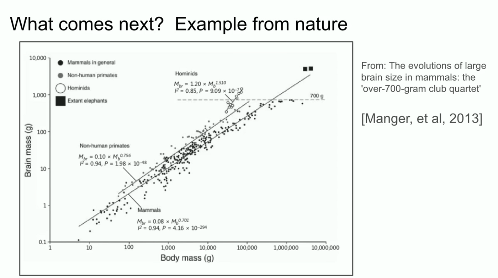
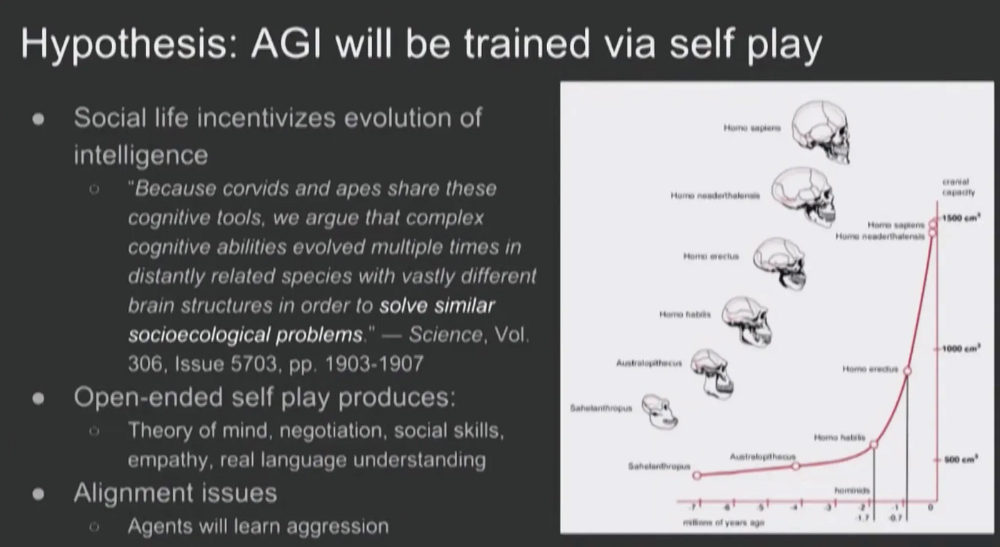
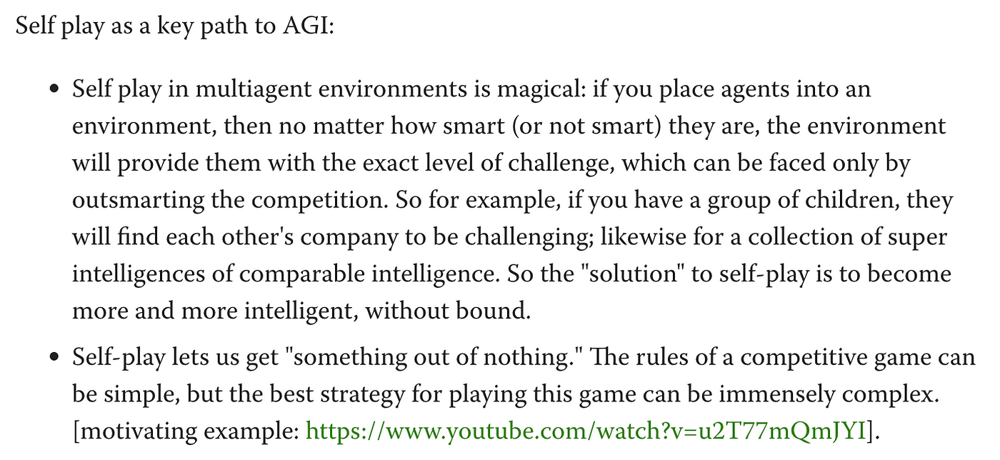

At NeurIPS 2024, Ilya Sutskever delivered a short keynote address in honor of his Seq2seq paper, published a decade earlier. It was his first—and so far only—public appearance to discuss his research since parting ways with OpenAI.
The talk itself shed little light on his current work. Instead, he reaffirmed the prevailing view that the “age of pre-training” had come to an end, touched on strategies researchers were pursuing to overcome this challenge, and outlined a broad vision of a super-intelligent AI future.
There was one interesting slide, however, which seemed oddly lodged in the middle of his presentation without much continuity with the rest of his talk. It was this:


Ilya first noted his interest in this slide from when he was just beginning his career, chronicling how he “went to Google to do research, to look for this graph.” The chart on its surface looks pretty straightforward: a linear relationship captures the ratio of animal brain to body mass, a rare example of “nature working out neatly.” The captivating part about the graph, Ilya narrates, is how the slope for the hominids is different—the steepness of the slope seems to suggest something qualitatively different about how humans evolved.
The implication for AI? There are multiple scaling laws in both nature and machine learning, and for the latter we’ve only just identified the first.
This reminded me of another talk he gave at NeurIPS 2017 on self-play. The younger Ilya still carried an air of mystique, like a scientific messiah reveling in his latest breakthrough. To OpenAI’s credit back then, he was far more transparent about his work. He outlined some research experiments done on self-play in video games (notably, OpenAI’s Dota 2 bot), as well as training bots in physical simulations to do sumo wrestling and goaltending.
But, predictably, he also took the liberty to speculate into the long-term future of self-play. In particular, he closes with this slide:


The similarity between this and the 2024 version struck me. Not only the visual resemblance, but also the specific word choice he used in 2024 that mirrors what’s shown on the diagram: “Hominids… there’s a bunch of them. Homo habilis, maybe, and neanderthals.” He appears to be referencing the same pattern of rapidly scaling intelligence in the recent genetic ancestry of humans. Why is this? 2024 Ilya asks.
The 2017 slide seems to provide a plausible answer.
The hypothesis he offers for hominid evolution hinges upon the notion of relative standing in the tribe. Once individuals begin competing with others of comparable intelligence in complex social structures, natural selection favors those that have slightly more intelligence, which allows them to climb or stay atop social hierarchies easier. The real threat to survival, in his words, is “less the lion and more the other humans.” What ensues is an “intelligence explosion on a biological timescale.” The scientific consensus for this theory is half-hearted at best, as he jokingly acknowledges (“there exists at least one paper in science that backs this up”), but it makes sense intuitively.
The analogue of this biological theory in AI is self-play. Agents facing each other in relatively basic environments (physical simulators, “simple” board games) can develop extremely complex and novel strategies when placed into competition with each other. This is seen in many superhuman results in AI, from DeepMind’s AlphaZero to the aforementioned Dota bot, but thus far has no proof of generalization outside of such siloed domains like LLMs do.
But what Ilya seems to propose, in the slide above, is that there is potential for generalization. AIs that are sufficiently smart and socially organized enough can plausibly develop theory of mind, social acumen, and understanding of artificial constructs like language. Yet this training method also poses a risk: self-play is inherently open-ended, which means that AI models may settle on a “win at all costs” mentality and thus become misaligned with human values.
More concretely, self-play in principle also can eliminate the main hurdle researchers face today: lack of training data. When pitting agents against each other, the agents begin to learn less from the static environment they coexist in and more from each other, such that the opposing agents become the environment. As Ilya illustrates below:


So the obvious question: is self-play what he is working on now?
A lot of the story begins to makes sense if you suppose this is the case. His cryptic Twitter posts nodding at “a project that is very personally meaningful to me” and a “different mountain to climb.” The quirky NeurIPS slide. The emphasis on multiple scaling laws and data scarcity. His doctrine on the purity of RL and unsupervised learning. The prediction of self-awareness in future AIs.
Admittedly, this is a fairly romanticized hypothesis and there is generous room for error. But I think every researcher dreams of seeing their core instincts validated. Ilya has demonstrated remarkable consistency in his beliefs over the years, and he’s been right often enough that it no longer feels like mere coincidence. It would make sense for him to return to the questions he started with—this time, answering them at scale.
Update (November 2025): As it turns out my guess was wrong (see Dwarkesh podcast with Ilya).